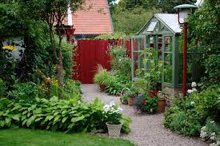

Att kommentera koden
Du ska i denna uppgift kommentera koden till denna sidan.
Det är viktigt att du är tydlig i din beskrivning så det är lätt för alla att förstå vad du menar.
Det är viktigt att vara kommunikativ så slipper vi en massa missförstånd.
Det här är lite mer text på en ny rad.
För att underlätta för läsare kan det vara bra att dela upp information:
- Första - det är viktigt att vi tänker på vem som ska ha användning för vår sida när vi skriver den.
- Andra - så är användningen av olika färger viktigt för att användaren tydligt ska se det den behöver.
- Tredje - ger vi förmycket information på en gång kan det bli svårt att hitta den info man söker.
Bra länkar
- Validering av kod. När vi programmerat html så kan vi gå in på w3Cs hemsida och validera den så vi inte gjort några missar.
- Komplementfärger hjälper oss så att det vi vill ha fram blir tydligare.
| Andra sätt att dela upp information |
För att det ska bli lättare att hitta |
| data1 |
data2 |
| data3 |
data4 |
